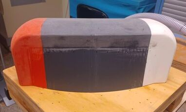
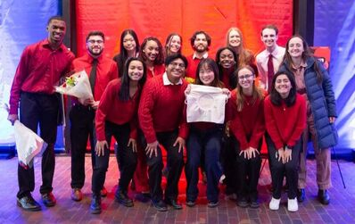

Packaging
The gantry needed useful planar travel while fitting inside a product with significant space constraints. Component placement and motion geometry were therefore driven by the available envelope from the beginning.
MIT 2.009 · Product Engineering Processes
A compact XY gantry for an embroidery accessory designed to move fabric accurately, quickly, and reliably within a constrained package.
01
Project Overview
Scribbly was a team project developed in MIT's 2.009 Product Engineering Processes course. The device turns a user-provided image into thin, washable guide lines on fabric so the user can embroider the pattern afterward.
My primary responsibility was the gantry system: the mechanical architecture, CAD, motion-stage mounts, moving components, assembly, alignment, and testing. The gantry had to fit within the product envelope while moving a range of fabric and hoop sizes accurately and reliably.
02
Design Challenge
The gantry needed useful planar travel while fitting inside a product with significant space constraints. Component placement and motion geometry were therefore driven by the available envelope from the beginning.
The mechanism was deliberately designed with fewer belts and fewer opportunities for failure. Simplicity was treated as a performance requirement, not just a manufacturing convenience.
Motor speed, torque, available power, payload, structural stiffness, and positioning precision all had to be considered together to produce usable embroidery motion.
03
Mechanical Architecture
The motion system used an H-belt arrangement driven by NEMA 17 stepper motors. Linear guidance came from four 0.25-inch rods: two running front-to-back and two running left-to-right.
Oil-impregnated bronze or brass bushings supported the moving stages. The 0.25-inch rod diameter provided a useful balance between low moving mass and sufficient stiffness for the target motion.
Spring-loaded belt clips maintained belt tension while allowing the system to be assembled and adjusted without a complicated tensioning mechanism.
Simplified representation of the gantry architecture.
04
Design Details
The gantry was squared with a dial indicator before being bolted to the stationary frame. This provided a practical way to correct assembly error before final integration.
Spring-loaded belt clips provided tension while reducing the need for bulky dedicated tensioners.
Linear rods and plain bushings created a compact guidance system with low part count and straightforward assembly.
The mechanism was designed to avoid overconstraint, helping reduce binding and making alignment more tolerant of real-world manufacturing and assembly variation.
05
Engineering Process
Translate product needs into travel, payload, speed, torque, power, and precision requirements.
Arrange motors, belts, rods, bearings, and moving stages around the available packaging envelope.
Design the stationary base, motion-stage mounts, and moving components while considering manufacturability and assembly.
Build the mechanism, tension the belts, square the motion system with a dial indicator, and secure it to the frame.
Integrate the gantry with the rest of Scribbly and verify that the mechanical system could deliver the required motion.
Result
The completed motion system provided approximately 10 inches of travel and about 0.5 mm positioning resolution while carrying a lightweight payload of roughly 5 ounces.
More importantly, the project required balancing mechanical design, packaging, motor sizing considerations, manufacturing, alignment, reliability, and system integration—exactly the kind of cross-disciplinary work that turns CAD into a working machine.
The broader product team also developed the outer enclosure, product form, and garment interface around the internal subsystems, requiring close coordination between mechanical packaging and the final user experience.
06
Project Gallery





